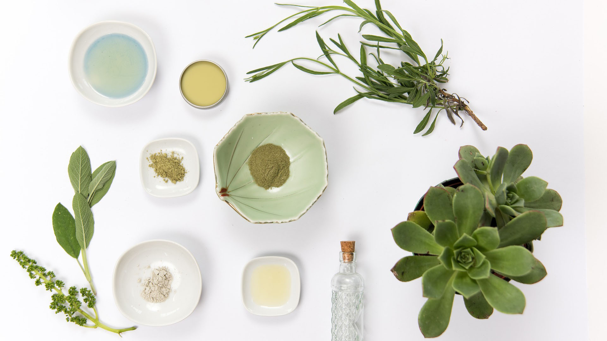

MAKE YOUR OWN ECO-FRIENDLY COSMETICS
Have you ever wonder what is in your favorite body cream? Or what makes your shampoo smells like a bubble gum? No? So maybe you should because sometimes you can find there the whole periodic table. The beauty industry is thriving sales machine that brings producers a huge profit. We’re not better: we can spend a fortune on tubes smaller than our pinkies than promise smooth and soft, shiny wrinkle and acne free complexion. Our skin is not only the biggest organ of our body but also very necessary one. It absorbs very easily what we put on it. Unfortunately among long lists of ingredients we will find small number of beneficial and good for our body components.
28. october 2019
By Aleksandra Wytulany
Our skin is not only the biggest organ of our body but also very necessary one. It absorbs very easily what we put on it. Unfortunately among long lists of ingredients we will find small number of beneficial and good for our body components. 1,4-dioxane Dioksan, AHA alpha hydroxy acid, Benzalkonium Chloride or BHT Butylated Hydroxytoluene sound weird? And it should. Unfortunately we’re usually not aware what’s inside our favorite both make-up and beauty products. Such ingredients negatively influence our bloodstream and provoke allergies, rashes or itches. What’s more, plastic packages and containers aren’t reusable and hard to break down.
In this article I would like to show you how in quick and easy way you can prepare natural, eco-friendly and chemical-free cosmetics that will improve your beauty and support your wallet. So, what are we waiting for?
Coffee scrub for your body
Have you drunk coffee in the morning? Great! Don’t throw the grounds as you can easily use them in your evening bathroom routine.
Prepare :
o clean, glass jar without any labels
o spoon or something to mix ingredients
o coffee grounds
o cinnamon
o oil of your choice (ex. olive oil, coconut oil)
How to turn it into scrub?
Just mix everything in glass jar and enjoy your new cosmetic. Warning: after your treatment the whole bathroom will smell like the best Italian café.
Face tonner for every skin
Maybe you’re a tea lover and you cannot imagine the perfect afternoon without a cup of hot cup of English tea? Or maybe you drink herbal teas as a remedy for pains and sicknesses? Here you can find out how to make a herbal face tonner in less than a minute!
Prepare:
o spray bottle or glass jar
o a bag of herbal tea: chamomile, green tea or mint tea
How to turn it into face toner?
Infuse your tea according to the instructions on the package. Wait until it’s cold and use immediately on your face. Advice: try to avoid cotton pads to reduce the waste.
Facial mask
Are you ready to prepare the most delicious face mask? It’s nutritional, sweet and student-budget friendly. Believe me, you have all the ingredients in your kitchen.
Prepare:
o small bowl
o spoon or something to mix the ingredients
o 1 tablespoon of honey
o 2 tablespoon of oats
o a pinch of turmeric
How to turn it into facial mask?
Mix everything in a small bowl and put on your face for 15 minutes. Then wash your face with cold water and use a herbal tonner.
